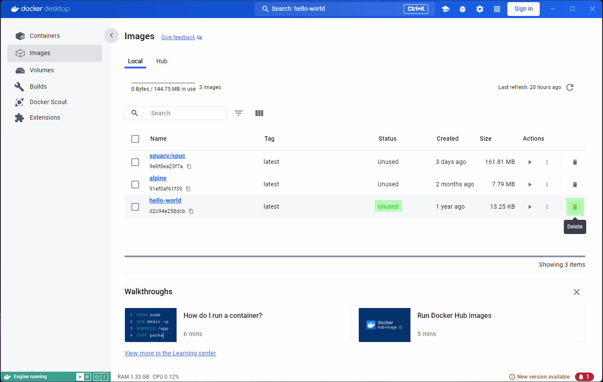

Docker Desktop
Last updated on 2024-10-17 | Edit this page
Estimated time: 20 minutes
In this episode, we will take a tour of the Docker Desktop dashboard, as is a helpful and graphical way of understanding the key concepts of Docker.
If you have installed Docker on a Windows or Mac machine, you will have Docker Desktop installed (Linux users generally wont have Docker Desktop).
Although useful as an introduction, it is unlikely that you will use Docker Desktop on your day to day work. You are much more likely to use the command line interface to interact with Docker, and we will cover this shortly.
It is also important to note that while Docker Desktop is mostly free, some features are offered at a premium. Additionally, it is not fully functional on all operating systems; it can produce conflicts with the docker engine on Linux, for example.
Therefore, this episode is meant to be demonstrative, that is, you do not need to follow along.
Overview
Questions
- What is Docker Desktop?
- What can it be used for?
- Why can’t it replace the cli?
Objectives
- Show Docker Desktop and its components.
- Understand what images and containers are.
- Visualize the process of image aquisition, container execution and where it ends.
- Understand the ephimeral nature of containers.
- Have a glimpse at containers that allow interaction.
- Understand the importance of cleaning up in docker.
- Understand the limitations of Docker Desktop.
The Space Purple Unicorn Association (SPUA) has instructed us to get to work on a very important mission, counting the number of purple unicorns in the universe!
They have told us to find the Space Purple Unicorn Counter (SPUC) container image in preparation for our mission.
Getting images
One of the useful features of Docker Desktop is the ability to search and analyze container images.
If you open the application you will likely see something like this:

You’ll notice that the panel on the left has a tab for ‘Images’ and another for ‘Containers’. These will be the focus for the episode, and we will ignore most other features.
On the top blue bar you’ll also find a search icon, which allows us to search for container images.
Lets go ahead and select this search box, and search for
spuacv/spuc.

You may have noticed that it already shows some information about the image. If you click on the image you’ll be shown more information. You should be able to see the documentation, and it lets you select a tag (version) from the dropdown menu.

Once you find the image you were looking for, you can either download it (pull), or directly run it.
We’ll start by downloading the latest version. Go ahead and click on
the Pull button.
Lets also pull the hello-world and alpine
images, which will help us explore features and issues with Docker
Desktop.
Inspecting images
Lets now go to the Images tab on the left panel. This
shows a list of all the images in your system, so you will be able to
see spuc and the other two images here.
The list already shows some information about the images, like their tag, size, and when they were created. It is also the place where you can run the images, or delete them. However, before we go any further, we want to inspect the images.
Clicking on the image will open a window with information on how the
image is built, and examine its packages and vulnerabilities. If any of
the building blocks of the image are vulnerable, we can see which, and
where they come from (Image hierarchy). For example, the vulnerabilities
in the spuc image come from its base image,
`python3-slim”.

This all looks rather scary, and it is important that we are careful
with the images that we download. It is therefore quite useful to be
able to analize them like this. The python:3-slim image, in
particular, comes from a verified publisher, so it is unlikely to be
malicious.
Another interesting thing to look at is the last few lines, which usually show the command that will be run when the container is started.
Running containers
The images that we just downloaded are immutable snapshots of an
environment, distributed to be used as templates to create
containers. Containers are executions of the image, and
because they are running, they become mutable.
Let’s run the hello-world image by clicking the
Run button in the Actions column, from the
Images tab.

A prompt will ask you to confirm Run or modify some
optional settings. For now, lets just confirm with Run.

You will be taken to a Logs tab inside the container
that you just ran. The logs show the output of this particular image,
“Hello from Docker!” among other things.
If you look carefully, the Containers tab on the left is
highlighted. We are looking at a container now, not an image, and so we
were re-located.
You might also find the heading in this page strange. Unless you specify a name for the container (which we could have done in the optional settings), Docker will generate a random name for it, which is what we see here.
Exploring the Inspect tab will show us some information,
but for now we are more interested in what the Terminal and
Stats tabs have to say. They both seem to indicate that we
need to run or start the container.


Indeed, if we look carefully, we will find an ‘Exited (0)’ status
under the container name, and a Start button near the
top-right corner. However, if we click on that button we will see the
output duplicated in the logs, and the Exited (0) status
again.

If we go back to the images tab and run the image again, we’ll see that the same thing hapens. We get the “Hello from Docker!”, and the container (with a new random name) exits.

The nature of most containers is ephimeral.
They are meant to execute a process, and when the process is
completed, they exit. We can confirm this by clicking on the
Containers tab on the left. This will exit the container
inspection and show us all the containers.
We have only run the hello-world image, but you can see
there are two containers. Both containers in the list have a status
‘Exited’.

You may be wondering why there are two containers, and not just one, given that we only used one image. As mentioned before, the image is used as a template, and as many containers as we want can be created from it. Every time we run the image, a new container is created.
So why are there not three containers then? When we ran the image from the container inspection window, we were running the command on the same container. That’s why there’s only two, even though we saw the container in action three times.
If we go back to the Images tab and run
hello world again, we’ll see a new container appear. All
the containers are still there, and they are not deleted automatically.
This can actually become problematic, and we will deal with it in a
bit.
Interacting with containers
Not all containers are as short lived as the ones from the
hello-world image. Lets try running the
spuacv/spuc, but look at the optional settings this time.
If you remember, we were instructed to run the container and configure a
port. Lets add a map to the port 8321 in the local
machine.

We are now ready to run it. You can immediately notice the status
under the container name is Running, and instead of an
option to start the container, we now get the option to stop it. The
Logs tab is not too different, but the Stats
tab already shows more information. The Exec tab also looks
more interesting, we get access to a terminal inside the running
container.


Before trying to do anything in the terminal,
lets look at the container list by clicking on theContainers`
tab on the left. You’ll see the green icon of the container indicating
that it is still live, and indication of how long it’s been running
for.
Clicking on the container name again will take us back to the
Logs tab in the container.
Spot a unicorn!
If you look at the logs, you’ll see that the SPUC container is
instructing you on how to interact with it. Lets go ahead and try that.
Open a terminal and run the command
curl -X PUT localhost:8321/unicorn_spotted?location=moon\&brightness=100.
If you look at the logs again, you’ll see that the container has
responded to your command with something like:
{"message":"Unicorn sighting recorded!","location":"moon","brightness":100}The documentation also mentioned that you can configure this print by
modifying the print.config file. How do we do that?
Let’s try and interact with the terminal inside the container.
If you print the working directory with pwd you’ll get
the app’s base directory: /spuc. You can also list the
contents with ls, and look at the app’s code. We can even
run apt update and install something; for example
apt install nano.

As you might expect, We can also modify things, like for example the
print.config file. Since we have installed nano, lets use
it to edit the file. Run nano config/print.config and
you’ll see the contents of the file. Replace the the print config line
with:
::::: {time} Unicorn number {count} spotted at {location}!! Brightness: {brightness} {units}Another curl now should show the changes we made to the
print.config file.
At this point, it seems like the container is very much like a virtual machine, and we can do whatever we want with it. However, as we’ve mentioned before, containers are meant to be ephimeral.
If we stop the container, we get a familiar empty tab in
Exec and Stats. The Containers
tab on the left will also show the container status as
Exited.
Lets go back to the Images tab, and run the
spuc image again. Now lets go to the Exec tab,
and try and edit the print.config file again. You’ll notice
that nano is not there anymore. If you look at the contents
of the file, for example with cat config/print.config,
you’ll see that the changes we made are gone.

When we re-ran the image, we created a new
container. The new container is created from the template saved
in the image, and so our changes have banished. This becomes very clear
when we go back to the Containers tab on the left. We can
see that the first container we created from the spuc image
is there, next to the new container (which is still running, by the
way).

Reviving containers
We can get the old container running again, although this is
rarely something we’d want to do. In Docker Desktop, all we
need to do is click on the Start button from the
Containers list. The terminal will appear empty, because it
is a new session, but you will be able to see the changes we made
before. 
Naming containers
We’ve been a bit sloppy with the containers, and they all have random names. It is possible to name the containers when we run them, and this can be very useful. However, it can also cause us problems.
Lets run the spuc image again, and name the container
SPUC.

If we look at the container list, it is much easier to find it, so the name is useful!
However, we forgot to map the port. So lets stop this container, and
launch another one. This time we’ll map the port, and use the name we
wanted. 
This time we got an error! This is because the name SPUC
is already “in use” by another container. If we want the same name,
we’ll have to delete the old container first.
Cleaning up
Lets go to the containers list, and delete the SPUC
container. There is a very convenient bin icon on the right, which will
prompt you for confirmation.

You should now be able to run the spuc image again, and
name the container SPUC.
Since we are deleting stuff, the hello-world image was
nice and useful to test docker was working, but it is now rather
useless. If I want to delete it, the Images tab on the left
has a convenient bin icon to do so. Clicking on it will prompt you for
confirmation, but it will fail.

You’ll probably notice that the status of the image is
In use. That seems strange though, given that all the
containers from that image excited immediately.
Lets have a look at the Containers tab. Some of the
containers in the list came from the hello-world image.
They are now stopped, but the fact that they originated from the
hello-world image is enough.
We’ve only been using Docker for very little, and we already have a long list of containers! You may see how this can become a problem; Particularly so because we were a bit sloppy and did not name the containers.
Let’s try and get rid of the containers then. We can conveniently
select them all with the tickbox at the top, and an option to
Delete shows up. Clicking on it will prompt for
confirmation, and we can go ahead and accept. 
All our containers are now gone. Forever. We can’t get them back. This is fine though - they were meant to be ephimeral.
Warning: You have to be careful here, this action deleted even the containers that were running. You can filter the containers before you select them “all”.
On the up-side, the Images tab shows the
hello-world image as Unused now. For docker,
an image is In use as long as at least one container has
been created from it. Since we have no containers from that image,
Docker now knows the images can be safely deleted. 
Limitations - Why not Docker Desktop?
We have seen many of the neat and functional bits of Docker Desktop, and it can be mighty appealing, particularly so if you lean towards the use of graphical interfaces. However, we’ve not touched on its weaknesses.
One thing we have completely lost now is the record of our unicorn
sightings. The containers are gone, and so are the changes we made to
the print.config file. Data in the containers can be made
persistent, but it is not the default behaviour, and it is not something
you can do from Docker Desktop!
Another very important thing is that Docker Desktop is very limited in how you can run the containers. The optional settings let you modify the instruction with which the container is run, but it is very limited.
For example, let’s run the other image we have already pulled,
alpine, which is the image of a very lightweight Linux
distribution. Go to the images list, and click on run.
Nothing seems to have happened at all! Not even a single output to
the Logs, and no way to open a terminal inside Alpine.


Just to be clear though, this Docker image does contain the whole Alpine OS. In Docker Desktop, however, there is no way to interact with it. This is the case for many (if not most) images. To be able to use it (or them), we need to provide some sort of input or command, which we cannot provide from Docker Desktop.
Therefore, Docker Desktop cannot really be used for much more than being a nice dashboard.
In the next episode, we will use docker from the command line, and all of the advantages it brings will become aparent.
Key Points
- Images are snapshots of an environment, easily distributable and ready to be used as templates for containers.
- Containers are executions of the images, often with configuration added on top, and usually meant for single use.
- Running a container usually implies creating a new copy, so it is important to clean up regularly.
- Docker Desktop is a great dashboard that allows us to understand and visualize the lifecycle of images and containers. It could potentially be all you need to use if you only consume images out of the box. However, it is very limited in most cases (even for consumers), and rarely allows the user to configure and interact with the containers adequately.